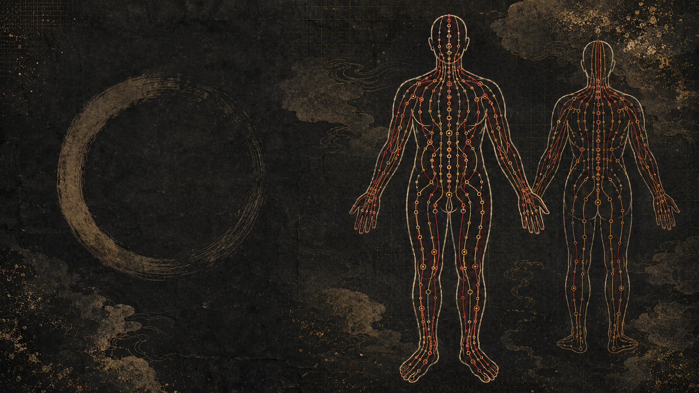
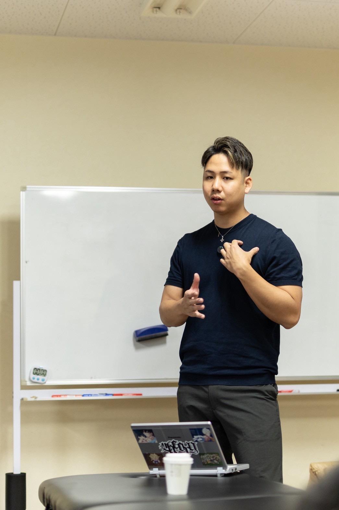

東洋医学を、
明日から使える技術へ。
筋肉を伸ばすだけでは届かなかった、
身体全体のつながりを読み解く2日間。
経絡×解剖学×実技で、
評価から施術、再評価までを身につける。
零式 経絡ストレッチ 東京開催
2026年9月26日(土)・27日(日)
10:00〜18:00
定員12名限定
通常価格 198,000円
一般募集
144,000円
零メンバーズ
100,800円
早割・募集期限：2026年8月31日(月) 23:59まで
現場でこんな壁に
ぶつかっていませんか？
その悩みを解決する新しい視点が、
「経絡を通して身体全体を捉えること」です。
零式 経絡ストレッチとは？
コンセプト
局所を伸ばし、全身をつなぎ、運動へ変える。
零式‐経絡ストレッチは、単に硬い筋肉を伸ばす技術ではありません。
1日目は、機能解剖学・運動学を基礎として、関節運動に合わせた正確なストレッチを習得します。
2日目は、1日目に習得した個別のストレッチを、陰陽・五行・十二経脈・表裏関係・六経・流注という東洋医学の理論によって全身へつなげます。
最終的には、
評価 → 局所ストレッチ → 経絡ストレッチ → 再評価 → 自動運動 → 荷重・動作統合
までを一貫して行えることを目指します。
零式‐経絡ストレッチの定義
零式‐経絡ストレッチとは、
関節運動を構成する局所の筋・筋膜を伸ばすだけではなく、身体を縦・横・斜めに連続する経絡の流れとして捉え、複数関節を連動させながら、その人の動作制限・緊張分布・左右差を変化させるストレッチ法である。
一つの筋肉だけを見るのではなく、
- 関節運動
- 筋・筋膜
- 胸郭・骨盤
- 上肢と下肢の連動
- 呼吸
- 左右差
- 経絡の走行
- 立位・歩行・スポーツ動作
までを統合して評価します。
ストレッチで可動域を出して終わるのではなく、獲得した可動域を自分で制御し、実際の動作で使える状態へつなげることが零式の目的です。
理論を支える3つの層
第1層｜機能解剖学・運動学
ストレッチによる可動域変化には、複数の要素が関係します。
- 筋腱複合体の受動抵抗
- 筋・筋膜の粘弾性
- 関節包・靱帯・周辺組織の制限
- 伸張刺激に対する感覚・伸張耐性
- 疼痛に対する許容性
- 防御性収縮
- 呼吸や自律神経状態
- 関節運動に対する神経系の許容範囲
- 術者の固定・操作方向
- クライアントの予測や不安
急性の可動域変化は、筋や筋膜が物理的に大きく伸びた結果だけではありません。
伸張刺激への感覚や許容性、受動抵抗、防御性収縮などが変化した影響も含まれます。また、継続的なストレッチでは可動域の増加や筋スティフネスの低下が報告されています。（慢性的ストレッチと可動域のメタ解析、筋スティフネスに関するメタ解析）
そのため零式では、「筋肉が伸びた感覚」だけで効果を判断しません。
- 関節可動域が変化したか
- 痛みや詰まり感が変化したか
- 動作が滑らかになったか
- 代償運動が減ったか
- 呼吸が変化したか
- 左右差が減ったか
- 獲得した可動域を自動運動で使えるか
- 荷重下でも変化を維持できるか
まで評価します。
1日目の基本公式
評価 → 制限因子の仮説 → 関節運動の特定 → 局所ストレッチ → 再評価 → 自動運動 → 動作統合
これが、一般的なストレッチと「運動につなげるストレッチ」の違いです。
第2層｜東洋医学における経絡理論
東洋医学では、身体を個別の筋肉や関節の集合ではなく、体表・四肢・臓腑が相互に関係する連続したネットワークとして捉えます。
経絡とは
経絡とは、身体の主要な流れである「経脈」と、そこから枝分かれして全身へ広がる「絡脈」の総称である。
- 経脈：身体を縦方向に走る主要な流れ
- 絡脈：経脈から枝分かれし、各部を結ぶ流れ
- 十二経脈：身体の主要な経脈
- 奇経八脈：十二経脈とは異なる調整的な経脈体系
経絡を現代解剖学上の血管や神経と同じ、独立した管状構造として説明することはできません。
零式では、経絡を、
東洋医学において、身体の機能的なつながりを説明するために構築されたネットワーク
として扱います。
経絡と筋膜の関係
経絡と筋膜には走行上の類似が見られる部分があります。また、経穴と結合組織面との関連を示唆する研究もあります。（経穴・経絡と結合組織面の関係）
しかし、経絡＝筋膜ラインと断定することはできません。
- 経絡：東洋医学の機能的ネットワーク
- 筋膜：現代解剖学で確認できる結合組織
- アナトミートレイン：筋膜の連続性を基にした理論モデル
- 零式：これらを動作評価とストレッチに応用した臨床モデル
として区別します。
筋膜ラインについても、一部のラインには解剖学的連続性を支持する研究がありますが、全ラインの機能的な力伝達が確立しているわけではありません。（筋膜ラインの系統的レビュー、筋膜連鎖の張力伝達レビュー）
第3層｜零式独自の臨床モデル
零式では、経絡を病名や内臓機能を断定するために使用しません。
経絡を、
身体のどの方向に、連続した緊張・伸張感・運動制限が存在するかを見る「全身運動ライン」
として活用します。
評価する内容は次のとおりです。
- 関節単体の自動・他動可動域
- 複数関節を連結したときの変化
- 経絡走行上の伸張感や左右差
- どの関節を加えると制限が増減するか
- 胸郭・骨盤・足部との関係
- 呼吸による変化
- 立位・歩行・上肢挙上の変化
- 遠隔部への介入による再評価結果
これは古典理論そのものではなく、
東洋医学の経絡理論と現代の機能解剖学を、原口慶篤がストレッチ・動作評価へ応用した臨床モデル
と位置づけます。
一般的なストレッチとの違い
| 一般的なストレッチ | 零式 経絡ストレッチ | |
|---|---|---|
| 視点 | 硬い筋肉を中心に考える | 全身のつながりから考える |
| アプローチ | 部位ごとに伸ばす | 経絡、呼吸、姿勢、動作を総合的に見る |
| 刺激の選択 | 方法が画一的になりやすい | その人の状態に合わせて刺激を選ぶ |
| 確認 | 柔軟性の変化を確認する | 施術前後の反応を総合評価する |
| 応用 | 単独のメニューになりがち | 整体やトレーニングにも応用できる |
※一般的なストレッチを否定するものではありません。既存の技術に新しい視点と武器を加えることで、より幅広いアプローチが可能になります。
こんな方におすすめです
- パーソナルトレーナー、整体師、セラピスト
- 柔道整復師、鍼灸師、理学療法士
- ストレッチ専門店のスタッフ
- 身体に関する仕事をしている人
- 施術の引き出しを増やしたい人
- 東洋医学を現場で使える形に落とし込みたい人
- 筋肉や関節以外の視点も持ちたい人
- ストレッチを一から学びたい初心者
専門家だけに限定しすぎず、ストレッチ経験が浅い人でも基礎からしっかり学べる内容です。
受講後に目指せる状態
- 経絡の基本的な考え方を説明できる
- 経絡と筋肉、関節、呼吸、動作のつながりを考えられる
- クライアントの状態に合わせて経絡ストレッチを選択できる
- 施術前後の身体の変化を評価できる
- 普段の整体、ストレッチ、トレーニングに技術を組み込める
- 筋肉をただ伸ばすだけではない施術ができる
- 慢性的な疲労、冷え、呼吸の浅さ等に対する視点が増える
- クライアントへの説明力と提案力を高められる
- 新しい施術価値を提供し、顧客満足度の向上につながる

2日間のカリキュラムCurriculum
基礎から応用、そして現場への導入まで。
「基礎 → 理解 → 実践 → 症状応用 → 現場導入」
のステップで、確実に現場で使える技術へと昇華させます。
関節運動からつくる基礎ストレッチ
1日目は、機能解剖学・運動学を基礎として、身体を正確に伸ばす技術を身につけます。
ただポーズを取らせるのではなく、関節の角度・固定・操作方向を変えながら、狙った筋へ正確に刺激を入れる方法を学びます。
【基礎理論】
ストレッチを再定義する
- 柔軟性・可動性・安定性・運動制御の違い
- 可動域が変化する神経・感覚・力学的メカニズム
- 筋性・関節性・神経性制限の見極め
- ストレッチの適応と安全管理
- 自動運動と他動運動の評価
【基礎技術】
- ポジショニング
- ハンドリング
- ホールディング
- 支点と固定
- 呼吸との同期
- 伸張方向・角度・強度
- 代償運動の止め方
- エンドフィールの確認
【上肢・下肢実技】
- 肩甲帯・肩関節
- 肘・前腕
- 手関節・手指
- 股関節
- 膝関節
- 足関節
- 足部・足趾
- 胸郭・骨盤との連動
【運動への統合】
- ストレッチ前後の再評価
- 獲得した可動域での自動運動
- アイソメトリック
- 荷重運動
- 上肢挙上
- スクワット
- 歩行への統合
伸ばして終わるのではなく、変化した可動域を実際の運動で使える状態へつなげます。
陰陽五行と経絡流注からつくる全身連動ストレッチ
2日目は、1日目に習得した個別のストレッチを、経絡によって全身へつなげます。
東洋医学の理論を暗記するのではなく、動作制限・伸張感・左右差から必要な経絡を選び、上肢・体幹・下肢を一つのラインとして変化させる方法を学びます。
【経絡の基礎理論】
- 経絡・経脈・絡脈
- 十二経脈
- 奇経八脈
- 気・血・津液
- 経絡と臓腑
- 経絡と筋膜の違い
- 伝統理論と零式臨床モデル
【陰陽五行】
- 陰陽の基本（前後・内外・上下、安定性と可動性）
- 木・火・土・金・水
- 相生・相克
- 五行を経絡選択に使う方法
【表裏・六経・流注】
- 十二経脈の接続順序
- 表裏関係
- 太陰・陽明
- 少陰・太陽
- 厥陰・少陽
- 上肢と下肢のつながり
- 流注方向を利用したストレッチ設計
【経絡別ストレッチ実技】
- 肺経・大腸経
- 脾経・胃経
- 心経・小腸経
- 腎経・膀胱経
- 心包経・三焦経
- 肝経・胆経
- 表裏経ストレッチ
- 六経ストレッチ
- 上肢・体幹・下肢をつなぐ全身ストレッチ
【動作評価と臨床応用】
- 頸部屈曲・伸展・回旋
- 肩関節運動
- 体幹屈曲・伸展・側屈・回旋
- 股関節運動
- 足部運動
- 局所と遠隔部の反応比較
- 経絡ストレッチ後の再評価
- スクワット・歩行・スポーツ動作への統合
- 症例別クリニカルリーズニング
症状がある場所だけを見るのではなく、その動作を構成する全身の流れを評価し、最も変化を生むストレッチを選択できるようになります。
講師紹介

原口 慶篤Yoshihiro Haraguchi
国内外の解剖実習への参加経験を持ち、オステオパシー、関節調整、内臓アプローチなどを深く学ぶ。パーソナルトレーナー兼整体師として長年現場に立ち、トレーニング、整体、ストレッチ、関節調整、東洋医学的な身体の見方を独自に組み合わせたアプローチを実践。トレーナー、セラピストへの技術指導やセミナーを多数開催している。
開催概要・料金
- セミナー名
- 零式 経絡ストレッチ 東京開催
- 日時
- 2026年9月26日（土）・27日（日）
両日とも10:00〜18:00 - 開催地
- 東京都内
※詳しい会場は決定後にお知らせします - 定員
- 12名限定
- 参加費
-
-
通常価格
198,000円(税込) - 一般募集 144,000円(税込)
- 零メンバーズ 100,800円(税込)
募集期限：2026年8月31日まで
-
通常価格
- お支払い方法
- 銀行振込、または クレジットカード決済
※分割払いは2回まで可能です
よくある質問
基本から解説するため、初めての方でも参加できます。難しい用語の暗記だけではなく、身体の見方と実技を通して理解を深めます。
大丈夫です。手の当て方、身体の使い方、ストレッチの方向など、基礎から確認します。
トレーナー、整体師、セラピスト、柔道整復師、鍼灸師、理学療法士など、身体に関わる仕事をしている方を主な対象としています。
内容が連続しているため、原則として両日参加をお願いします。
現場への落とし込みを目的として、実技と施術フローを中心に進めます。受講後は、ご自身の職域と経験に合わせて活用してください。
動きやすい服装、筆記用具、必要に応じて飲み物やタオルをご持参ください。追加の持ち物は開催前に案内します。
銀行振込、もしくはクレジットカード決済となります。
※分割払いは2回まで可能です。
一般的なストレッチは、硬くなった筋肉を見つけ、その筋肉を伸ばします。
しかし、身体の運動は一つの筋肉だけでは成立しません。
足部の状態は骨盤へ影響し、骨盤の運動は胸郭へつながり、胸郭の動きは肩甲骨や上肢へ影響します。
零式‐経絡ストレッチでは、まず関節運動と筋機能を正確に理解します。
そのうえで、陰陽五行・十二経脈・表裏・六経・流注という東洋医学の考え方を用い、局所の制限を全身の運動ラインとして捉え直します。
筋肉を伸ばすだけではない。
関節を動かし、全身をつなぎ、運動を変える。
これが、零式‐経絡ストレッチです。